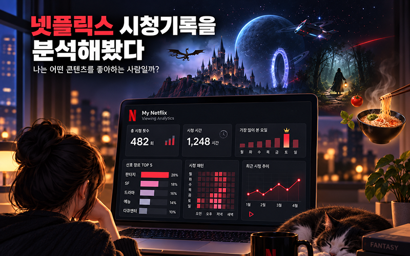
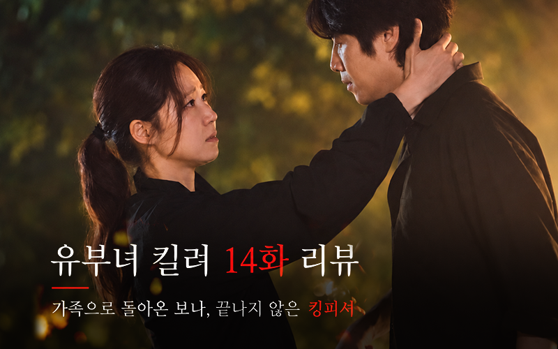

DAILY
메이드 인 코리아 시즌2 5~6화 리뷰
권력의 정점에 가까워질수록 백기태는 무엇을 잃어가는가? ⚠️스포일러 주의
DAILY CATEGORY STORY LIST
살아간 소중한 순간들...
DAILY
권력의 정점에 가까워질수록 백기태는 무엇을 잃어가는가? ⚠️스포일러 주의
DAILY
미래에서 찾아온 늙은 루데우스가 남긴 일기를 통해, 미래가 하나씩 드러난다. ⚠️스포일러 주의

DAILY
2019년 2월 3일부터 2026년 9월 13일까지 넷플릭스 총 시청 기록은 무려 4,236건
DAILY
괴물과 마법, 전쟁과 음모가 뒤섞인 다크 판타지《위쳐》시즌4 ⚠️스포일러 주의

DAILY
마지막까지 한 끗 차이를 보여주는 킹피셔 ⚠️스포일러 주의

DAILY
드디어 밝혀지는 가짜 킹피셔의 정체 ⚠️스포일러 주의